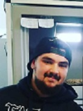
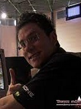
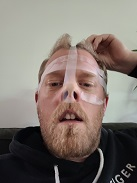

Présentation des z'accros des écailles
David HUSS
Point central de la rencontre des 3 individus, son expérience profite à tout le monde.
Sous ses airs de bad boy se cache un homme fiable et sympathique.
Kevin PASCAL
Ancien joueur pro CS, il s'est découvert un nouveau hobby : les reptiles.
Homme très abordable et sympathique, il fait parfois preuve d'impatience (ou d'abnégation selon le point de vue ;) ).
Damien GRUFFEILLE
Le 3ème laron de la bande.
Mr ICE. Non promis, je ne mords pas !